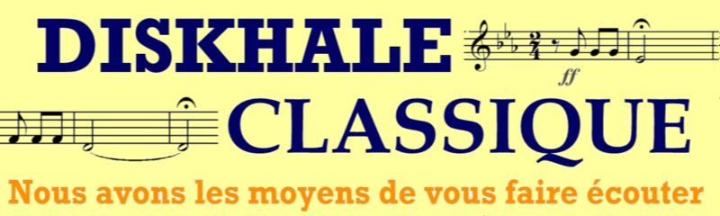

La
diskhâle classique c'est aussi du Jazz!
L'article
wikix de la Diskhâle
Les permanences
Du lundi au vendredi de 12h45 à 13h30,
au local à côté du binet BD (en face des salles pianos).
Pour les ouvertures exceptionnelles, suivez les heures d'ouverture en
direct sur br.diskhale.classique.
|
Lundi : |
Trez |
|
|
Mardi : |
|
|
|
Mercredi : |
Prez |
|
|
Jeudi : |
Respo Com |
|
|
Vendredi : |
Contact
Ecrire aux membres de
la diskhâle
Téléphone (pendant les horaires d'ouverture...) : 2630
Melomania
La Diskhâle classique organisait chaque année un concours de
reconnaisssance d'oeuvres musicales.
Les conditions d'utilisation
Une cotisation valable
pendant toute votre scolarité à l'X, vous permet d'emprunter jusqu'à 5
disques en même temps, que vous pouvez garder 3 semaines maximum.
Dans tous les cas, un chèque de caution de 75 € vous est
demandé à l'inscription.